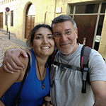

Por Días
Recorre las 32 etapas individuales con altimetría precisa, tiempos, distancias y fotos geolocalizadas de cada jornada.
Ver EtapasUna crónica de nuestro viaje, paso a paso. Descubre los detalles de cada etapa, nuestras fotos y los trazados de la ruta. ¡Buen camino, peregrino!

Selecciona cómo deseas recorrer nuestra experiencia a lo largo del Camino Francés:
Recorre las 32 etapas individuales con altimetría precisa, tiempos, distancias y fotos geolocalizadas de cada jornada.
Ver EtapasVisualiza los 6 grandes tramos geográficos del Camino Francés agrupados por comunidades y regiones históricas.
Ver TramosLa panorámica integral desde los Pirineos en Saint-Jean-Pied-de-Port hasta la Catedral de Santiago de Compostela.
Ver Ruta Total